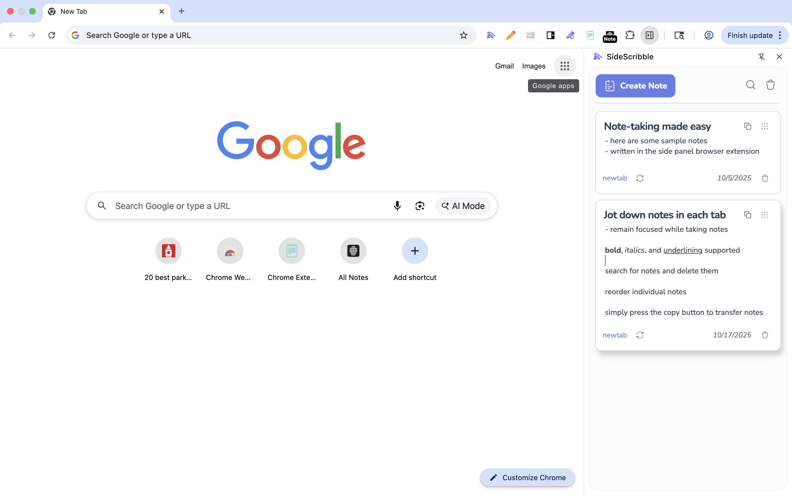
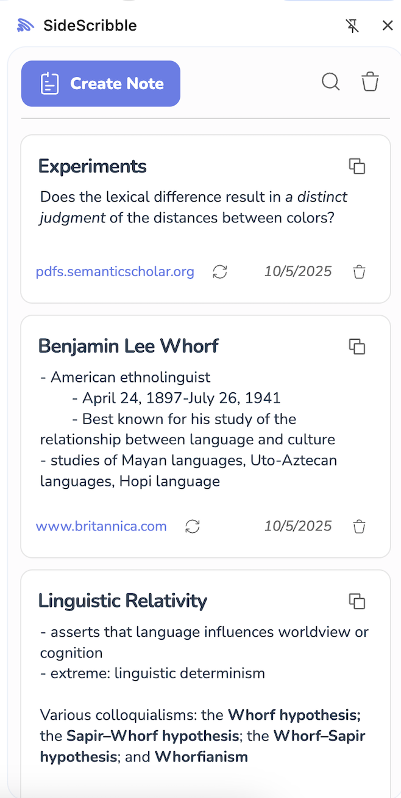
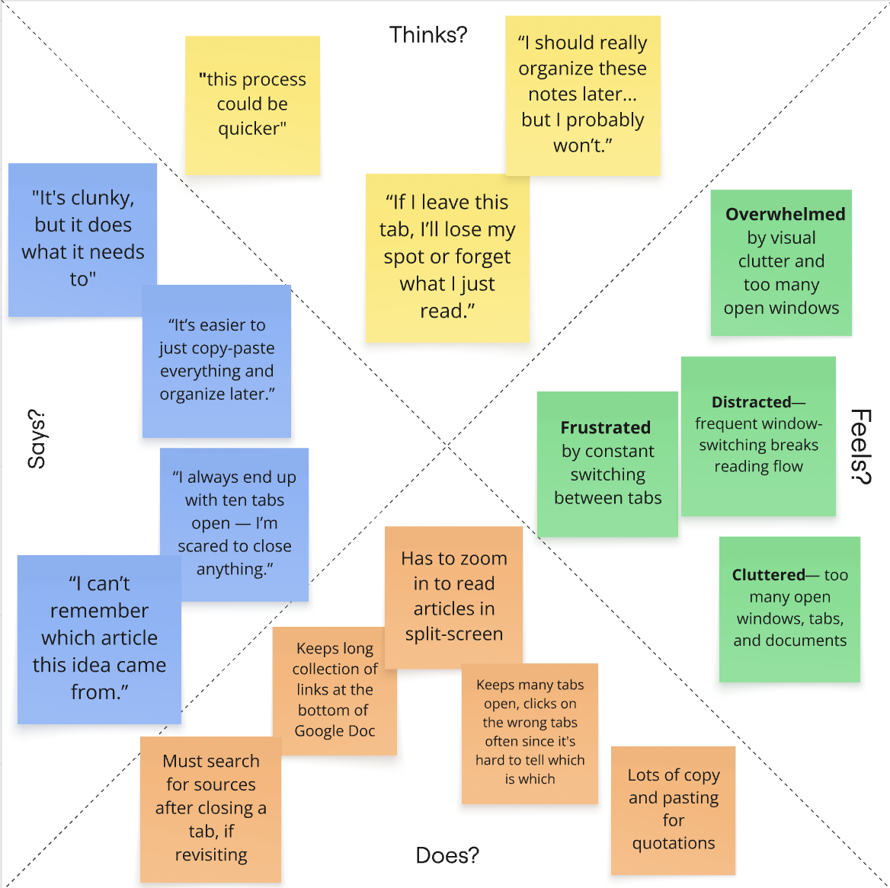
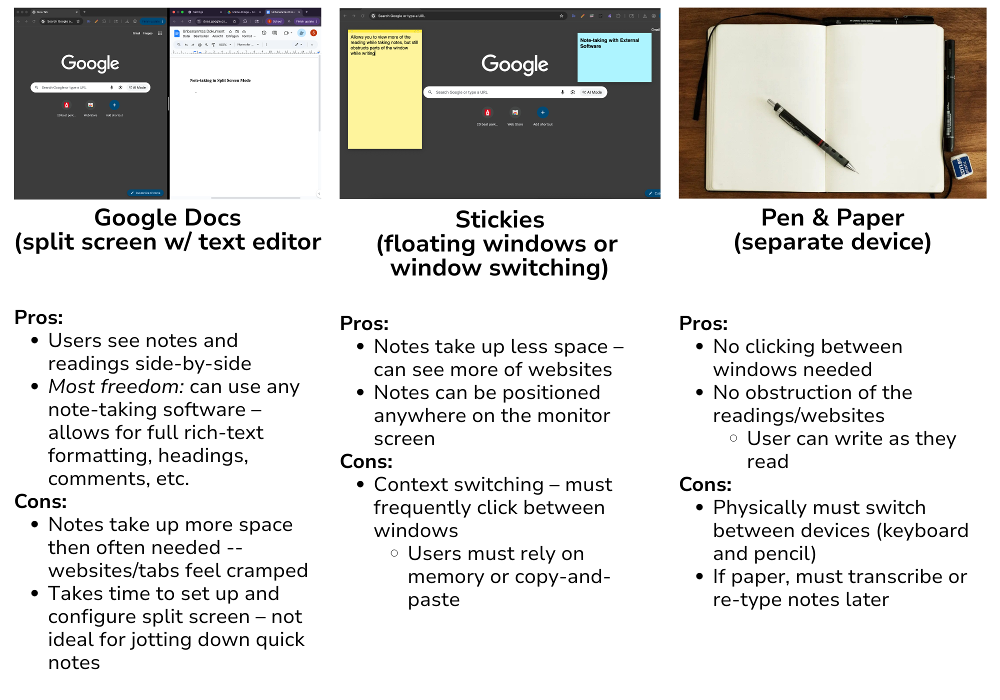
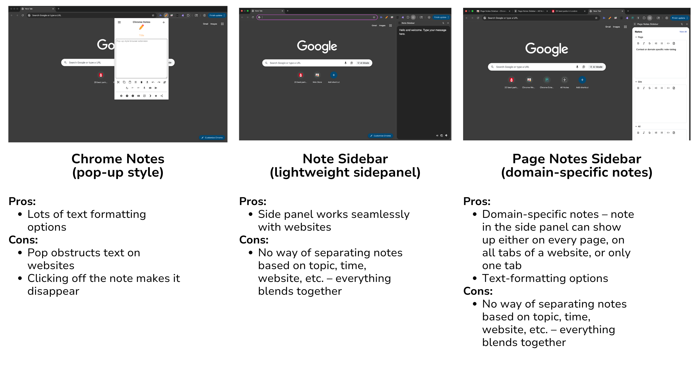
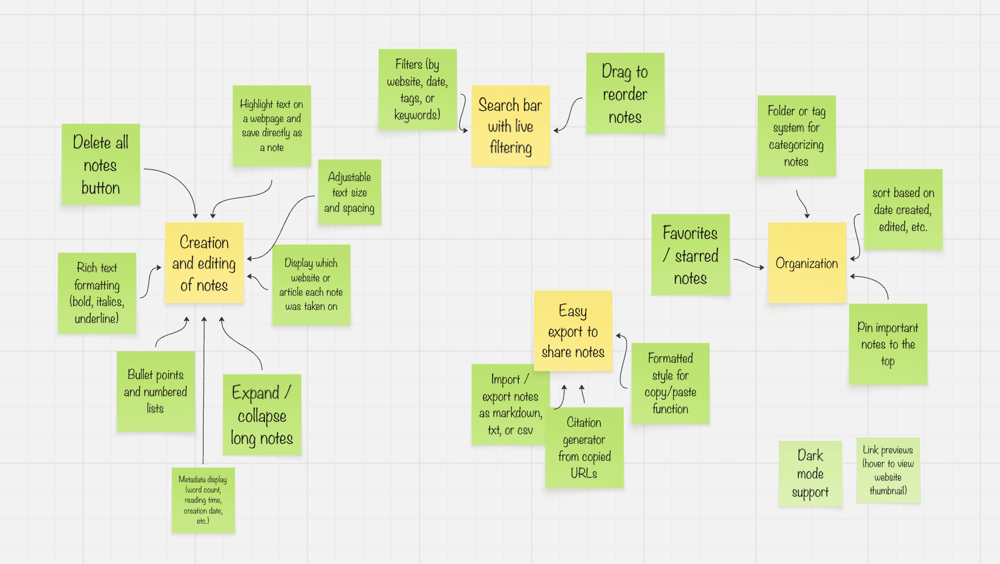
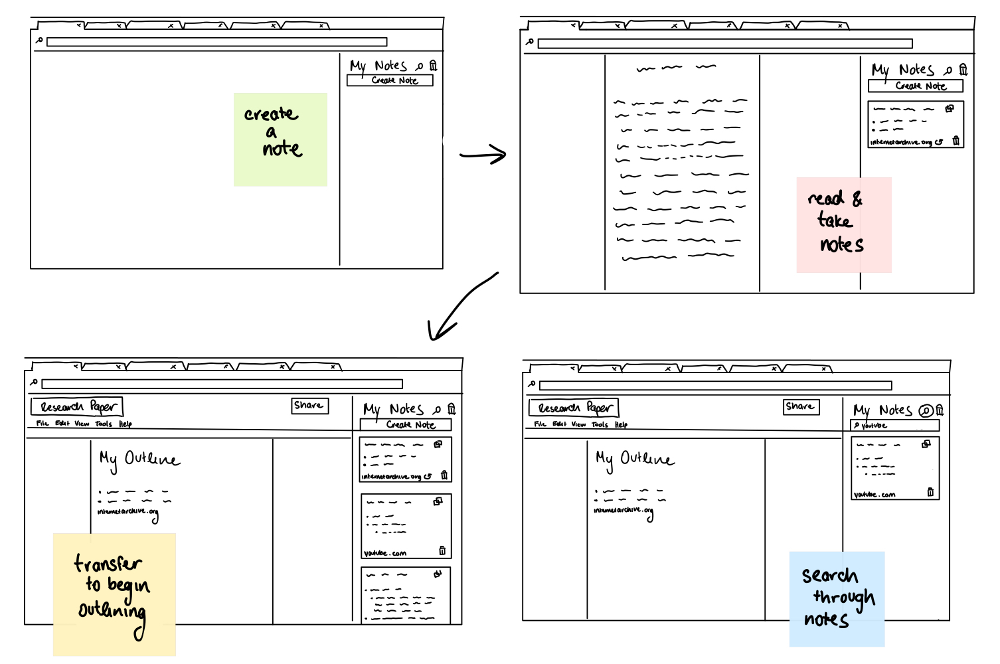
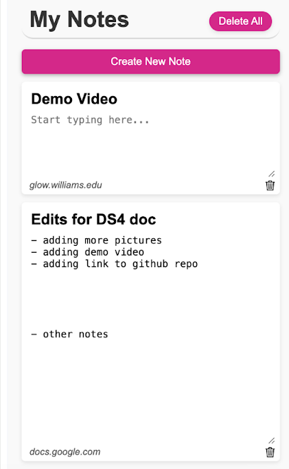
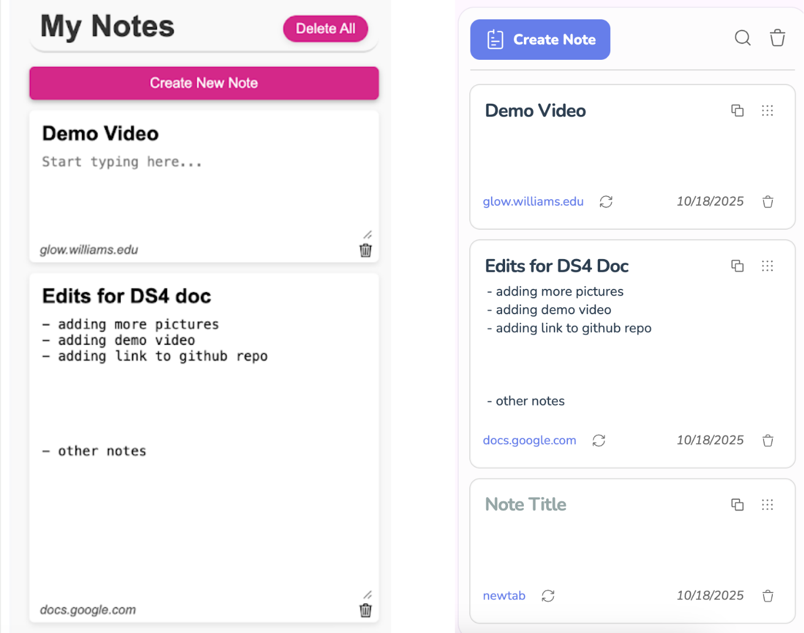

SideScribble
A collapsible, distraction-free note-taking sidebar that solves context-switching and keeps your ideas connected to where they begin.

The Problem
Twenty tabs open, a dozen sources, and notes scattered across apps, stickies, and text files.
When note-taking, there always comes what I describe as the "icky moment": when you have to switch from where you're reading to where you're writing. Think switching tabs, clicking off a webpage window to note-taking app, or looking away to write in a notebook.
For many people, this issue of context switching has never come to mind. In theory, it should take no more than a couple seconds. However, for people like students, writers, and researchers, who all need to read through numerous sources on a daily basis, time adds up.
A side panel Chrome extension that allows users to take notes as they read and keeps track of the details for them.
Users simply open up the side panel, create a note, and their thoughts are stored, along with the website URL. When users want to transfer their notes, they can simply copy notes into any document, which are then pasted with the title, body text, and website URL formatted.

Research & Ideation
Because note-taking is such a broad domain—spanning everything from todo apps to knowledge management systems—research formed a significant part of this project. Early on, we wanted to understand both how people take notes and why they choose certain tools over others.
User Interviews
We interviewed 7 individuals: a mixture of students, writers, and researchers—all people who would most likely need to read through many sources while taking notes. We had them walk us through a recent project they had completed—an essay, research paper, news article, etc.—and observed their process while asking a few questions.
- What is your process when researching a subject?
- What tools or software do you use to take notes while browsing?
- How do you keep track of your sources?
- What frustrates you most about your current system?
- If you could change one thing about your note-taking workflow, what would it be?
Results
The vast majority of people opted to use a split-screen with their browser for readings and their preferred note-taking software (the majority used Google Docs).
As represented in a particular user's empathy map, we noticed repetitive behaviors—clicking on the wrong tabs, revisiting a page multiple times to re-read one quote, and more. The systems users had developed for themselves were still mentally taxing and often inefficient.

Empathy map of user with split-screen method, created in Miro
Competitive Analysis Part I
Based on the user interviews, we separated note-taking techniques into three main categories, and analyzed the differences between them all. The vast majority of users opted for a split-screen approach with their preferred software (Google Docs, Notion, Word, etc.), however a few preferred floating windows, where they could position note-taking software wherever they pleased on the screen, or a separate device, such as a notebook or iPad.

From these comparisons, we realized what would be most helpful is something integrated into the websites users read through. After poking around a bit, we realized a browser extension, despite it's smaller, lightweight size, could be perfect. For users needing to research numerous webpages, what would be better than a piece of software built into their browser?
- Onboarding made easy—one click to install, no log-in or complex installation process required
- Persistent access—always accessible in the toolbar
- Non-intrusive by nature—side panels and pop-ups are designed to coexist with webpages, not replace them
- Easy transfer of notes—can copy or type citations directly into the side panel, rather than switching tabs
- Context-aware interaction—browser extensions can also access URLs (when permitted), allowing them to automatically link to sources
Competitive Analysis Part II
To ensure, however, that similar software didn't already exist, and to justify the existence of this software, we conducted competitive analysis once more, but solely for note-taking browser extensions we could find on the Chrome Web Store.

We thought that surely, an extension had already been created to solve this problem. Upon further examination, though, none of the existing extensions we found seemed intended for the research process.
Most of these extensions seem great for jotting down ideas untied to specific webpages—maybe a shopping list, a takeaway from an article, etc. We still failed to find an extension with the specificity we were searching for.
Features, features, features
With our end-goal in mind: a note-taking browser extension, it was time to brainstorm.

Affinity diagram created in Miro
Should we implement file organization? What text formatting options? Is a search feature helpful? Should users be able to pin notes?
We had begun to overwhelm ourselves with the breadth of features we could implement.
What helped us define our needs was an idea from Cal Newport, a computer science professor at Georgetown University and author. He describes three different types of notes:
- What he calls "a working memory file" where you quickly jot down stuff immediately so it's captured and you get on with what you're focusing on. You process later.
- A list of "obligations" and associated details. Your to do list.
- Big picture, deep thinking stuff about goals, insights, etc.
Through this lens, we could narrow down our features. For instance, starring and pinning notes wouldn't help us achieve our goal: a lightweight extension for temporary notes.
A lot of this project is grounded in Hick's Law: the more choices a person is presented with, the longer it takes them to reach a decision. When our primary goal was to minimize distractions to the research process, adding too many features could actually take away from the user's experience.
Prototyping

Low-fidelity prototypes of our browser extension

Here is our first implementation, with functioning features. The core concept is a simple, unobtrusive interface with one bold color, to indicate the main actions available. The "create new note" button is intentionally larger—it should be easier to click, as it is the user's main action.
We were also somewhat rushed to get the first prototype and implementation complete before a class deadline. While it was functional, we were not satisfied with the design. If anything, this served more as a design mock-up. For our next iteration, we would decide to do a mockup in figma first.
User Testing
We each selected two people to interview, resulting in six user interviews. Each user was tasked with researching a topic of their choice—this time, using our browser extension. The only requirement was that they used a minimum of four sources, all online on their laptops. They were then asked to start writing an outline.
Overall, users expressed satisfaction with the extension. They all used it as expected—taking a new note for each website, clicking on saved URLs to revisit sources—and many expressed that they wished their current note-taking method was as built-in to websites as the extension.
"I kind of forget that I'm using it, since the side panel is just there, on all of my tabs."
However, there were still many things to improve:
1. Minimalism Gone Too Far
It appears that in the process of searching for simplicity, we had omitted certain features users found themselves reaching for. We needed to give them more explicit choices--ex. buttons to bold and underline text, or a way to update the link stored in a note.
2. Maximizing Space
Our other main realization was how small the side panel was. Thus, we needed to make the most of the limited space we were given. From this, we decided to prioritize implementing the search feature, as well as a collapsible note feature—so long notes didn't take up too much space.
3. Second Guessing
Some users asked for features we had intentionally omitted, like a file organization system. At this point, we chose to continue omitting them. However, this made us reconsider how simple we really wanted the extension to be, and we did end up revisiting these ideas, as you'll see at the end of this case study.
Visual Redesign
I won't list them all for the sake of brevity, but there were so many more small decisions that ended up making a huge difference on the final product. This step of the design process required many late nights of staring at corners, font sizes, spacing, and more. Below are some of the decisions that went into our design prototype.
- Removed the "MyNotes" text and moved the "create note" button up → freed up a LOT space for notes
- Increased size of buttons → users previously had trouble clicking on delete icon
- Increased corner radius → made the extension fit in much more with modern websites
- Changed from pink to purple → the purple blended much more with other websites (while still standing out enough as an action button)
- Removed the pink from the delete all button → this action was used less frequently than the "create note" button
- Box shadow on note hover → added visual separation between notes
We created a high-fidelity prototype in Figma, to lay out all of the details, then proceeded with full implementation.

Side-by-side comparison of the old and new designs
Final Solution
SideScribble has been published to the Chrome Web Store! Check it out and install it here.
Going Forward
Our Growth
This entire research and design process has taught us a lot. First, it exposed the complexities of note-taking software—and how to analyze competitors to understand the different role each software plays.
It showed us just how much thought goes into making something intentionally simplistic—and a user not noticing all the thought we've put into the design choices is a good thing, as it means they're immersed in their process.
Features, Features, Features
There were still a few features we simply ran out of time for—like bullet point formatting and specific text formatting buttons. As this extension continues to grow, we hope to implement these, and more.
This whole time, we've avoided certain features—like file organization—out of fear that it would overwhelm the user. Perhaps Hick's Law had caused us to live too much in fear. However, we're now looking at how to implement a folder structure system that stays in line with our original goal of simplicity. So many users immediately asked about it, that we've learned it's essentially an expected feature of note-taking software.
Back to the Drawing Board
This process is neverending. We're hoping to interview users after a longer usage period (around a month), to see how they end up really using the extension—we don't want to end up guessing how the extension will be used—we really want to make changes based on feedback.
If you've made it to the end—thank you for reading this case study—hopefully you were also as fascinated by the complexities of the note-taking world as we were :)